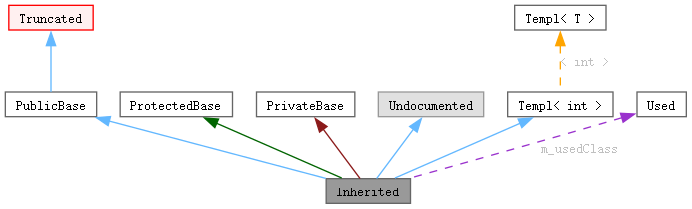

本页将向您解释如何理解由 doxygen 生成的图.
考虑如下例子:
class Invisible { };
class Truncated : public Invisible { };
class Undocumented { };
class PublicBase : public Truncated { };
template<class T> class Templ { };
class ProtectedBase { };
class PrivateBase { };
class Used { };
class Inherited : public PublicBase,
protected ProtectedBase,
private PrivateBase,
public Undocumented,
public Templ<int>
{
private:
Used *m_usedClass;
};
结果将会生成以下图:

上图中的矩形含义为:
-
灰色填充的矩形 表示生成上图的结构体或类.
-
黑色边框的矩形 表示已经被文档化的结构体或类.
-
灰色边框的矩形 表示未被文档化的结构体或类.
-
红色边框的矩形 表示该结构体或类的关系没有被完全显示.如果生成的图超出了指定的尺寸范围，有一些关系就会被截断而无法显示.
箭头的含义为:
-
蓝色的箭头 表示 public 继承关系.
-
深绿色的箭头 表示 protected 继承关系.
-
深红色的箭头 表示 private 继承关系.
-
紫色虚线箭头 表示两个类之间的聚合关系. 可以通过箭头旁标明的变量访问箭头指向的类或结构体实例.
-
黄色虚线箭头 表示模板类实例和模板类之间的关系. 箭头旁边标明了模板类实例化时所用的模板参数.
 1.14.0
1.14.0